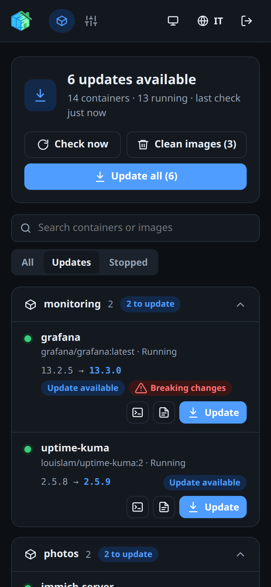

Web interface
D2HA has two pages, Containers and Settings, and works the same on a computer and on a phone.
Opening D2HA
Open the address you gave D2HA: http://localhost:12021 on the server with the example setup, or the address of your reverse proxy or tunnel. The first time, D2HA asks for the setup code and creates your account: see First sign-in.
Signing in
Enter your username and password, and the code of your authenticator app if two-factor authentication is on.
- After 5 wrong attempts from the same address in 15 minutes, or 30 from anywhere, D2HA answers Too many attempts for a while.
- You are signed out after a time without activity: 30 minutes by default, from 15 minutes to 24 hours in Settings.
- Changing the password, or turning on two-factor authentication, signs out your other devices.
Getting around
| In the header | What it does |
|---|---|
| Containers | The list of your containers, their updates and logs (Containers and updates) |
| Settings | Account, Home Assistant, Telegram, check interval (Settings) |
| Theme button | Switches between the system theme, light and dark |
| EN / IT | Switches the language between English and Italian |
| Sign out | Ends the session on this device |
Theme and language are remembered in the browser. Without a choice, D2HA follows the theme of the system and the language of the browser (Italian or English).

Installing it as an app
D2HA can be installed like an app, with its own icon and window:
| Where | How |
|---|---|
| Chrome or Edge on a computer | The install icon in the address bar, or the menu → Install D2HA |
| Android (Chrome) | Menu → Add to home screen or Install app |
| iPhone and iPad (Safari) | Share → Add to Home Screen |
Browsers install apps only from an HTTPS address (or localhost). If an access layer such as Cloudflare Access sits in front of D2HA, let /sw.js and /static/ through without sign-in, or the browser cannot read the app files.
Something wrong or missing on this page? Open an issue.